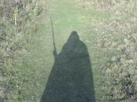
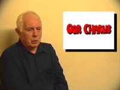
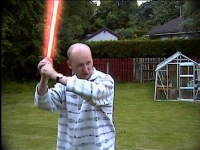
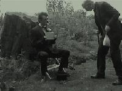
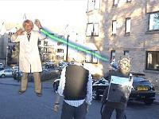
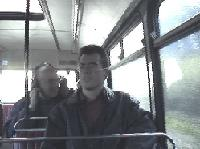
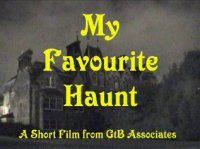
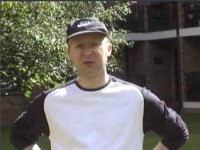
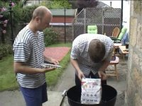
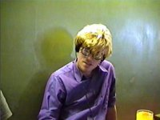

Please note, all videos are in RealVideo format.
You will need to install the FREE RealPlayer to play them,
this is available at http://www.real.com
|

|
The Wish (11.38)
Sci-Fi Fan Trevor Anderson wishes that real life could be more like Star Wars, but when his wish comes true, he is in for more than he bargained for!
Filmed on 3 cameras, on location at South Queensferry and in Edinburgh. Probably the most special effect rich feature from GtBFilms to date!
Recorded on Digital8 and MiniDV, 19th October 2003.
High Speed connection version (55.7MB RealVideo)
Low Speed connection version (8.3MB RealVideo)
See the BEHIND THE SCENES photos from this production at:
http://www.gonadovision.com/users/baldas/
To see the ORIGINAL SCRIPT from this production click
here!
|
|

|
Charlie's Cap (4.49)
Charlie from Edinburgh Cine and Video Society recalls the story of his school cap.
One camera, one actor, one hour of filming. This is the result of a Group Video Making project at ECVS.
Recorded on MiniDV, 30th October 2003.
High Speed connection version (22.5MB RealVideo)
Low Speed connection version (3.7MB RealVideo)
|
|

|
GtBFilms Effects Test Trailer (1.16)
A quick trailer to test out some effects techniques which we hope to use in a future production! See them here first!
Recorded on MiniDV, June 2003.
High quality version only (6MB RealVideo)
|
|

|
Changing Times (6.01)
The lads are at a loss for what to do for their next film, until Baldas notices that it is 100 years since the first film was made. Magnox's imagination takes over from there!
This short film was the first from GtBFilms to be produced solely on Digital cameras.
Recorded on Digital8 and MiniDV, 20th July 2003.
High Speed connection version (28MB RealVideo)
Low Speed connection version (5MB RealVideo)
See the BEHIND THE SCENES photos from this production at:
http://www.baldasovision.freeserve.co.uk/times/
|
|

|
What a Mess! (12.40)
When Edwina gives her mad scientist husband Norris an Ultimatum - "Tidy the flat or I'm leaving" - it's time for drastic measures. Norris and his assistant Melvin embark on a madcap scheme that soon goes from bad to worse!
This short film was an experiment in the use of split, and blue screen techniques.
Recorded on Digital8 and 8mm, 3rd - 10th March 2003.
High Speed connection version (42MB RealVideo)
Low Speed connection version (10MB RealVideo)
|
|

|
Peaceful (7.35)
The heartrendering tale of one man's quest to find some peace and quiet. Will he finally find the peaceful location he is looking for?
Captured using Firewire, and our first production where the end-format was intended to be DVD quality.
Recorded on Digital8 and 8mm, 3rd January 2003.
High Speed connection version (25MB RealVideo)
Low Speed connection version (6MB RealVideo)
|
|

|
My Favourite Haunt (8.29)
Our first drama! Joseph and Velma visit their great aunt, but soon discover things are not going well in the great house. The plucky youngsters soon become embroiled in a spooky mystery tale!
Recorded on Digital8 and 8mm, 9th November 2002.
High Speed connection version (28MB RealVideo)
Low Speed connection version (7MB RealVideo)
|
|

|
Airshow Excursion (9:07)
Recorded on the 13th July 2002, the Airshow Excursion is an
exciting trip to the Museum of Flight Annual Airshow.
Recorded on Digital8 and 8mm cameras.
High Speed connection version (29MB RealVideo)
Low Speed connection version (7MB RealVideo)
|
|

|
The Bald-B-Que (5.42)
Join Baldas, Gonad, Magnox, Splodge and Choccy at the summer BALD-B-QUE 2002!
Recorded on Digital8, captured with firewire.
High Speed connection version (19MB RealVideo)
Low Speed connection version (5MB RealVideo)
|
|

|
Joseph Sponjol's Big Day Out (5.05)
Joseph Sponjol and his friends don't get out much, but we were there with our cameras on one of these rare occassions, so now you too can enjoy his zany antics!
Recorded on 8mm camcorder.
High Speed connection version (17MB RealVideo)
Low Speed connection version (4MB RealVideo)
|
|
|
|


{kind=link}
{kind=link}
{kind=link}
{kind=link}
{kind=link}
{kind=link}